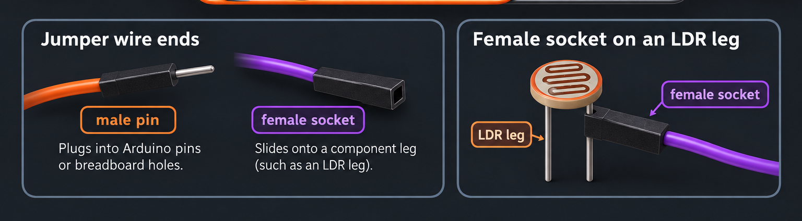

Световой инструмент
Световой инструмент превращает движение рук, тени и вспышки света в медленную живую композицию. Три фоторезистора управляют тремя слоями звука: низким дроном, теплым органом и высоким воздушным сиянием.
Это тестовый режим. Он имитирует подключённые датчики случайными плавными значениями и бесконечно создаёт музыку, которую можно оставить играть на фоне.
Если звук не работает, отключите беззвучный режим на телефоне.
Сначала включи звук, затем подключи Arduino.
Важно: Serial Monitor / Serial Plotter в Arduino IDE должны быть закрыты, иначе браузер не сможет читать порт.
Как собрать световой инструмент
Это версия для новичков: сначала собираем простую схему с тремя датчиками света, потом загружаем код в Arduino, проверяем поток чисел и подключаем страницу к плате через браузер.
Что купить
- Arduino Uno или Nano. Uno удобнее для первого раза.
- USB-кабель для Arduino и компьютер с браузером.
- Макетная плата breadboard.
- 3 фоторезистора LDR — это датчики, которые меняют сопротивление от света.
- 3 резистора 10 кОм. Они нужны, чтобы Arduino могла читать свет как число.
- Провода-перемычки male-to-male.
Как это работает
Каждый датчик собран как делитель напряжения: свет меняет сопротивление фоторезистора, Arduino получает число на A0, A1 или A2, а сайт превращает эти числа в звук.
- Больше света — значение меняется вверх или вниз в зависимости от положения LDR и резистора.
- Сайт сам калибрует минимум и максимум, поэтому просто проведи рукой от тени к яркому свету.
Какие провода нужны и какой конец куда вставлять
Тебе нужны jumper wires / Dupont wires. У провода «папа–мама» один конец острый, а второй — чёрная штучка с отверстием.

- Конец «папа» / male pin — это острый металлический штырек. Его вставляют в Arduino или в отверстие breadboard.
- Конец «мама» / female socket — это чёрная штучка с отверстием. Её надевают прямо на ножку фоторезистора LDR.
- На каждую ножку LDR надень конец «мама» (чёрную штучку с отверстием) отдельного провода. Два острых конца «папа» вставь в разные места breadboard, как показано ниже.
Интерактивная 3D-сборка
Поворачивай и приближай модель. Нажми на деталь, чтобы увидеть подсказку.
Схема подключения
Смотри на цветные провода: оранжевый 5V идет в красную линию breadboard, серый GND идет в синюю линию, а A0/A1/A2 идут в точки, где встречаются ножка LDR и ножка резистора 10 кОм.
- Каждый LDR ставится между красной линией 5V и своей рабочей строкой.
- Каждый резистор 10 кОм ставится между этой же рабочей строкой и синей линией GND.
- A0, A1 и A2 подключаются именно в рабочие строки, не в 5V и не в GND.
Как читать дырки на breadboard
Сверху написаны буквы A, B, C, D, E, потом идёт щель, затем F, G, H, I, J. Сбоку написаны цифры. Название дырки получается из буквы и цифры: например A10.
Для датчика 1 используй A10, C10 и E10. Эти три дырки уже соединены внутри breadboard. Не используй F10–J10 для этой же точки: за центральной щелью это уже другая группа.
Сборка по шагам
Пока ничего не подключай к USB. Сначала спокойно собери всю схему без питания.
- Положи Arduino и breadboard перед собой так же, как на картинке. Красная длинная линия breadboard — это «плюс 5V», синяя — «земля GND».
- Возьми красный провод «папа–папа». Один острый конец вставь в отверстие 5V на Arduino, второй — в любое отверстие вдоль красной линии «+» breadboard.
- Возьми чёрный или серый провод «папа–папа». Один конец вставь в GND на Arduino, второй — в любое отверстие вдоль синей линии «−» breadboard.
- Возьми первый фоторезистор LDR. У него две тонкие металлические ножки, и у него нет плюса и минуса — любую ножку можно выбрать первой.
- Возьми два провода «папа–мама». Надень конец «мама» (чёрная штучка с отверстием) первого провода на одну ножку LDR. Такую же чёрную штучку второго провода надень на другую ножку. Теперь от датчика идут два отдельных провода.
- Острый конец первого провода от LDR 1 вставь в свободное отверстие красной линии «+5V».
- Острый конец второго провода от LDR 1 вставь точно в дырку A10: найди букву A сверху и цифру 10 сбоку.
- Возьми провод «папа–папа» для A0. Один конец вставь в A0 на Arduino, второй — точно в C10 на breadboard.
- Возьми резистор 10 кОм. Одну металлическую ножку вставь в E10. Вторую — в ближайшую дырку синей линии «− GND». Если ножка не дотягивается, соедини её с синей линией коротким проводом.
- Проверь датчик 1: A10 — провод от LDR, C10 — провод от A0, E10 — первая ножка резистора. Второй провод LDR идёт к красной линии +5V, вторая ножка резистора — к синей линии GND.
- Датчик 2 собери так же в ряду 16: провод LDR — A16, провод A1 — C16, первая ножка резистора — E16. Другой провод LDR идёт к +5V, другая ножка резистора — к GND.
- Датчик 3 собери в ряду 22: провод LDR — A22, провод A2 — C22, первая ножка резистора — E22. Вторые стороны снова идут к +5V и GND.
- Проверь глазами: ни один провод 5V не должен случайно попадать в синюю линию GND. Между +5V и GND всегда должен стоять LDR и резистор, а не голый провод.
- Только теперь вставь USB-кабель в Arduino и компьютер. Если плата сильно нагревается или пахнет — сразу вынь USB и ещё раз проверь шаг 13.
Как проверить
Скачать Arduino IDE ↗- Открой Arduino IDE и выбери свою плату и порт.
- Загрузи код ниже.
- Открой Serial Monitor на скорости 115200.
- Ты должен увидеть строки вроде 512,640,470.
- Закрой Serial Monitor перед подключением сайта, иначе браузер не получит доступ к порту.
Код для Arduino
void setup() {
Serial.begin(115200);
}
void loop() {
int a0 = analogRead(A0);
int a1 = analogRead(A1);
int a2 = analogRead(A2);
Serial.print(a0);
Serial.print(",");
Serial.print(a1);
Serial.print(",");
Serial.println(a2);
delay(30);
}
Запуск инструмента
- Открой эту страницу в браузере на компьютере.
- Нажми «Включить звук».
- Нажми «Подключить Arduino» и выбери порт платы.
- Закрывай датчики рукой, фонариком или тенью. Сайт сам подстроит диапазоны.
- Если звук реагирует странно, нажми «Сбросить диапазоны» и снова проведи каждый датчик от темноты к свету.